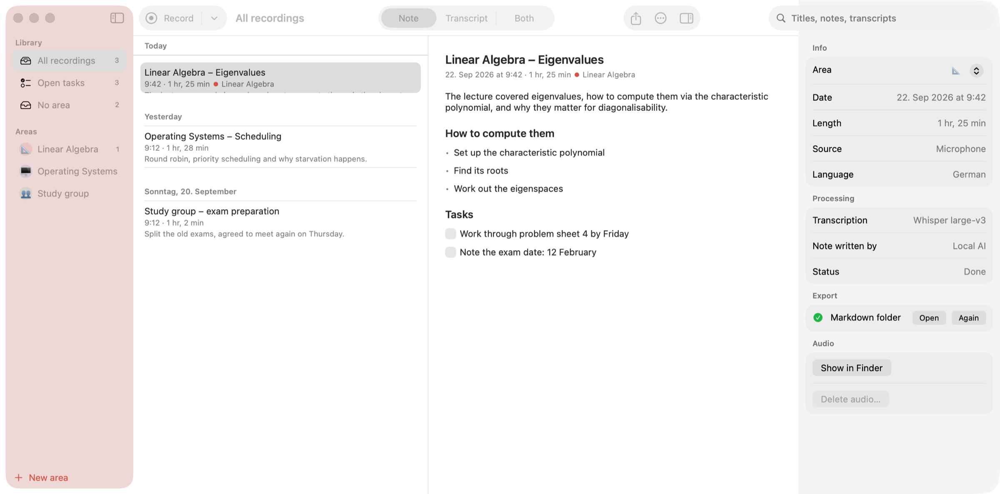

In the app
Built like a Mac app.


Earnote records, transcribes with Whisper and turns the result into a structured note — all on your Mac. No account, no subscription, nothing in the cloud.
macOS 15 or newer · Apple Silicon · free · MIT licence

How it works
⇧⌘R, or one click in the menu bar. Microphone and system audio are captured together.
Whisper transcribes while you are still in the room, so nothing is left to do afterwards.
Summary, topics, decisions and tasks as checkboxes — minutes after you stop.
Transcribed on this Mac · 12× faster than real time
The lecture covered eigenvalues, how to compute them via the characteristic polynomial, and why they matter for diagonalisability.
The note
Earnote writes what you would have written yourself if you had been fast enough: a short summary, the topics that actually came up, decisions, and tasks you can tick off. Edit any of it, or summarise again with your own instruction — the AI version is one click away.
Listen back
When the lecturer went too fast, click the time in the transcript and hear exactly that moment. The paragraph that is playing stays highlighted while you read along.
Want both at once? ⌘3 puts the note and the transcript side by side, and the transcript scrolls along with the audio.
Spelled wrong
Correct
Applies to title, note and transcript — and goes into your dictionary, so Whisper gets it right next time.
Names and terms
Lecturers’ names, module titles, technical terms: put them in the dictionary and Earnote hands them to Whisper and to the AI before they even become a mistake. Per area or for everything.
Privacy
Transcription runs locally with Whisper. The notes are written by a language model that Earnote downloads once and then runs on your device — no account, no API key, works offline.
Recordings, transcripts and notes live in your home folder and are never synced.
No analytics, no crash pings, no server that belongs to Earnote.
You can pick Claude, OpenAI, Gemini or your own server — the app says clearly when text would leave.
More of it
Print the note or save it as a clean PDF — headings, bullet points, tasks as boxes.
Find a term across all transcripts, step through the matches with ⌘G, hear the spot.
If an event is running, the recording is called “Linear Algebra” instead of “Uni, 21 Sep”. You choose which calendars count.
⌃⌥⌘R starts and stops a recording from any app — no window to find first.
Zoom, Teams, Meet: Earnote asks whether it should take notes, and can stop when the call ends.
Every subject or client gets its own colour, instructions for the AI and export targets.
Notion, Obsidian, Logseq, Apple Notes, Bear, Craft or a plain Markdown folder.
One overview across every lecture of a subject: topics, how they build on each other, exam hints.
Question and answer cards straight from the lecture — edit them in the note, export them to Anki.
Open tasks go to Apple Reminders, Things or Todoist — one list per subject.
Earnote filters the sentences Whisper invents during silence instead of writing them down.
In the app
Questions
26 MB, signed and notarised. Install it, allow the microphone, done.